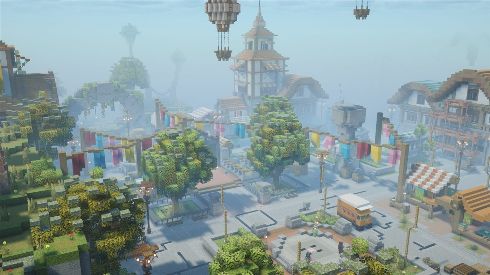

Kingdoms
A Kingdoms egy közösségi túlélő játékmód, ahol nem egyedül, hanem egy egész királyság élén küzdesz a fejlődésért. Alapíts vagy csatlakozz egy királysághoz, oszd ki a rangokat (vezér, al-vezér, tag), és építsétek fel közösen a birodalmatokat a nulláról. Kereskedj a piacon a többi királysággal, szövetkezz az erősebb ellenfelek ellen, vagy vívjátok ki a magatok helyét a szerver legerősebb birodalmai között - minden csata, minden gyilkosság a királyságotok presztízsét és ranglista-helyezését mozgatja.